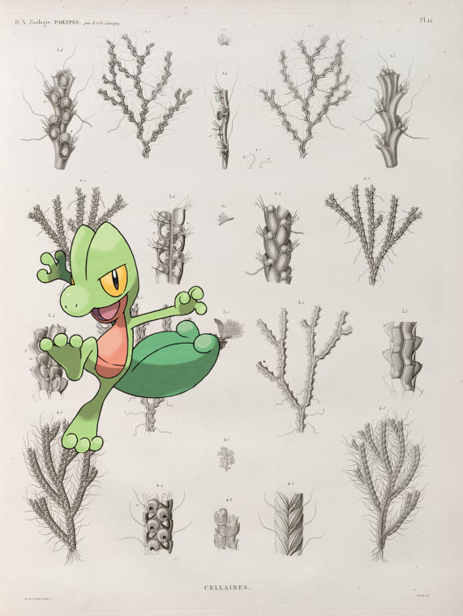

Pokémon in the NYPL archives
2018-7-16 08:10:03
Fennekin @
Georges Clemenceau, London, December 2nd, 1918.
.
2018-7-16 06:10:03
Mankey –
BREAKFAST [held by] NORDDEUTSCHER LLOYD BREMEN [at] KONIGIN LUISE (SS;)
2018-7-16 04:10:03
|
Germany, Hessen, 1749-1828.
2018-7-16 02:49:04

Treecko –
Zoologie. Polypes. Cellaires.
2018-7-15 20:10:04
Ivysaur +
Cattleya victoria regina.
40
|
39
|
38
|
37
|
36
|
35
|
34
|
33
|
32
|
31
|
30
|
29
|
28
|
27
|
26
|
25
|
24
|
23
|
22
|
21
|
20
|
19
|
18
|
17
|
16
|
15
|
14
|
13
|
12
|
11
|
10
|
9
|
8
|
7
|
6
|
5
|
4
|
3
|
2
|
1
|
0
 Ivysaur + Cattleya victoria regina.
Ivysaur + Cattleya victoria regina.